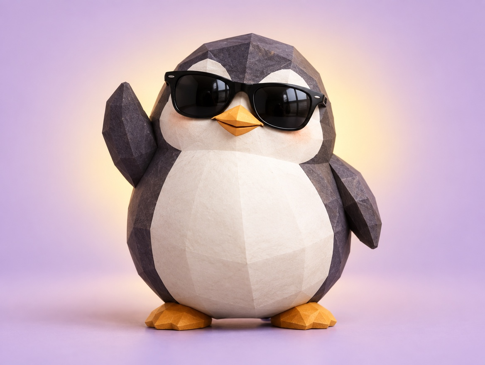

📝 DRAFT · 下書き — まだ本番に出していません · 下書き一覧
🐧 EVERYDAY LIFE⚡ 13 SEC
Say "this is getting interesting" when trouble comes, and you feel stronger 😎

Magic Words
When trouble happens, try saying, "This is getting interesting."
Strong Words
When you say strong words out loud, your feelings follow a little later.
⚡ TRY IT
Flip trouble into adventure
Oh no… so much trouble.
"This is getting interesting!" 🎢
Adventure mode: ON! 😎
Brave power
Tap a trouble card and say the magic words.
😎 All 4 troubles became adventures!
Even Rain
Even when rain ruins your plan, just say, "Interesting!"
Little Adventure
Then a problem turns into a little adventure.
📚 I learned this from the Japanese blog "Panda no Ondo".